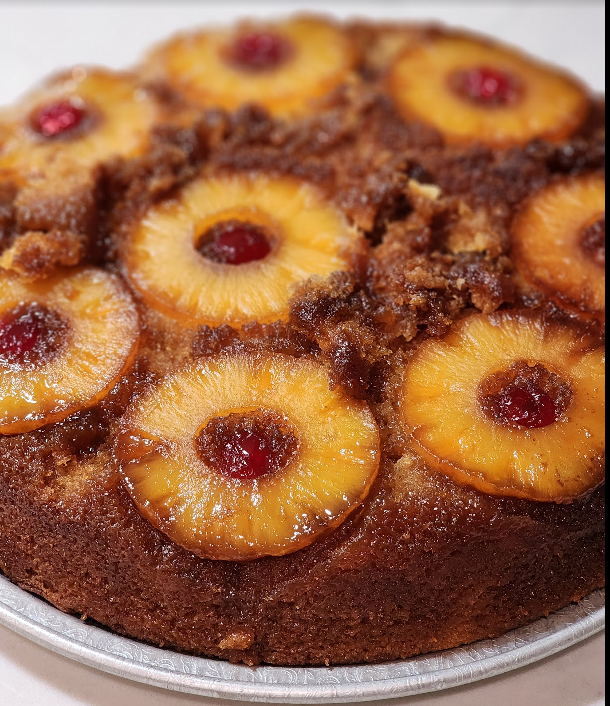

New Orleans Style Pineapple Upside-down Cake

Ingredients
- 12 oz butter (1½ C)
- 1½ C sugar
- 1 C brown sugar
- 4 eggs
- 1 C pineapple juice
- 2 2/3 C all-purpose flour
- 1 tsp baking soda
- 1 tsp salt
- 1 can sliced pineapples
- Maraschino cherries
Directions
- Prep Oven: Preheat oven to 350°F.
- Make Batter: Melt 8 oz butter. Stir in 1½ C sugar and 1 C pineapple juice.
- Add Dry: Sift flour with salt and baking soda into the wet ingredients and whisk until smooth.
- Add Eggs: Add eggs one at a time, whisking fully after each. If batter is too thick, add pineapple juice 1 oz at a time until pourable; set aside.
- Make Topping: Melt 4 oz butter with 1 C brown sugar over medium-high until sugar dissolves. Turn off heat. Arrange pineapple slices in the pan and place a maraschino cherry in each ring.
- Assemble: Pour batter evenly over the pineapple layer and smooth the top.
- Bake: Bake at 350°F, checking for doneness after 30 minutes. If a toothpick inserted in the center does not come out clean, bake 5 minutes more and recheck.
- Serve: Cool slightly, invert onto a serving platter, and slice.
The Gumbo Page
Michael Fritsche
mbf@fritsche.org